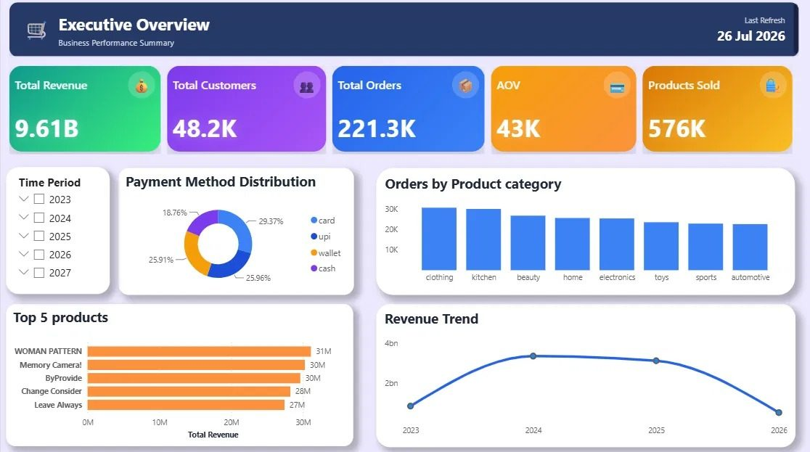

Customer360 Analytics & Automation Platform
Databricks · PySpark · SQL · Power BI · n8n
The business problem
Customers, orders, products, support tickets and clickstream lived in five separate sources, each with its own quality problems. Nobody could trust a single number.
What I built
- One Customer 360 model in Databricks (Bronze, Silver, Gold): 3 fact tables and 4 dimensions.
- Cleaning and validation rules on 300K+ order records.
- Automated data quality checks on 7 Gold tables (884K+ records) in n8n, with issue classification and audit logging in Google Sheets.
- Power BI dashboards for customer, order and support KPIs.
- Configured an Incremental Refresh policy in Power BI, and used Performance Analyzer to inspect DAX query and visual rendering performance.
What I found
1,734 duplicate customer IDs, 1,040 missing emails and 11,163 orders flagged for customer-related data issues. I turned the results into 4 recommendations with a 90-day action plan.

Select a tab to view each dashboard, the data model, or the n8n workflow. Click the image to enlarge.